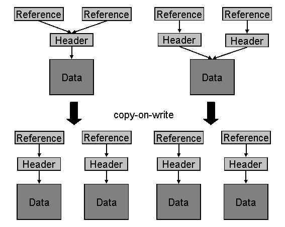

AS ABAP Release 755, ©Copyright 2026 SAP SE. All rights reserved.
ABAP - Keyword Documentation → ABAP - Programming Language → Declarations → Declaration Statements → Data Types and Data Objects → Types and Objects, Overview → Data Objects → Memory Management of Deep Objects →Sharing Between Dynamic Data Objects
When reference variables are assigned, only the references are copied. After an assignment, source and target variables point to the same data object or instance of a class (more precisely, to their headers).
Sharing takes place internally in assignments between similar strings and similar internal tables whose line types do not themselves contain table types. This means that the actual data values are not copied initially. Only the necessary administration entries are copied, so that the target object refers to the same data as the source object.
For strings, a new internal reference is created that points to the existing string header. For internal tables, a new internal reference and a new table header, which refers to the existing table body, are created.
Sharing between dynamic data objects is, of course, only active for as long as multiple dynamic data objects are involved, or more than one internal reference refers to the data values. As soon as only one internal reference refers to the data, sharing no longer takes place. Such cases occur, for example, if involved dynamic data objects only exist during the lifetime of a procedure, or if they are recorded as anonymous data objects by the Garbage Collector.
Active sharing between existing dynamic data objects is canceled when either the source object or target object is accessed in change mode (copy-on-write semantics). The actual copy process for the data values then takes place and the references and headers are changed accordingly.
The following figure illustrates the sharing of dynamic data objects. The upper section shows how strings are shared on the left and how internal tables are shared on the right side. The lower section shows how sharing is canceled when the source or target object is changed.

Hints